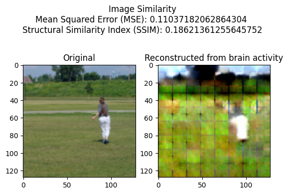
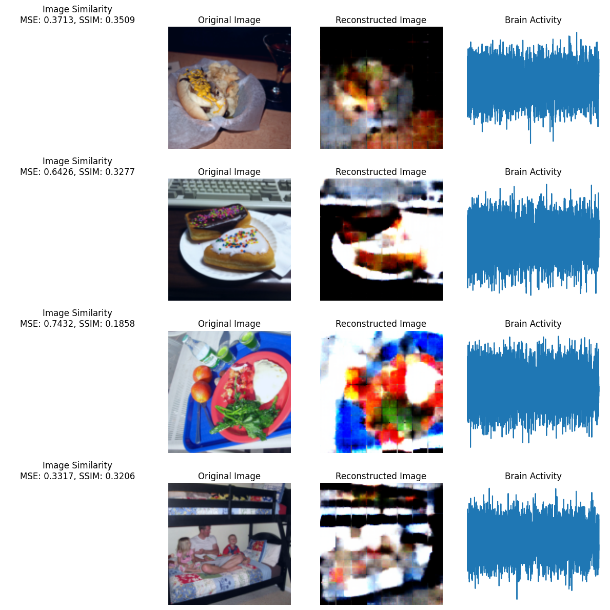

Recent Projects

Fall Detection
A vision-based deep learning system that detects falls in real-time video footage.
iOS Animation
Complex UI animation prototype for an iOS app.
Brain Decoder
This repository contains code and resources for reconstructing images from brain activity data using deep learning techniques. The project demonstrates the process of reconstructing images from fMRI data. It includes data preprocessing, model training, and image reconstruction steps. The original data of brain activity and associated images: algonauts_2023_tutorial_data.

